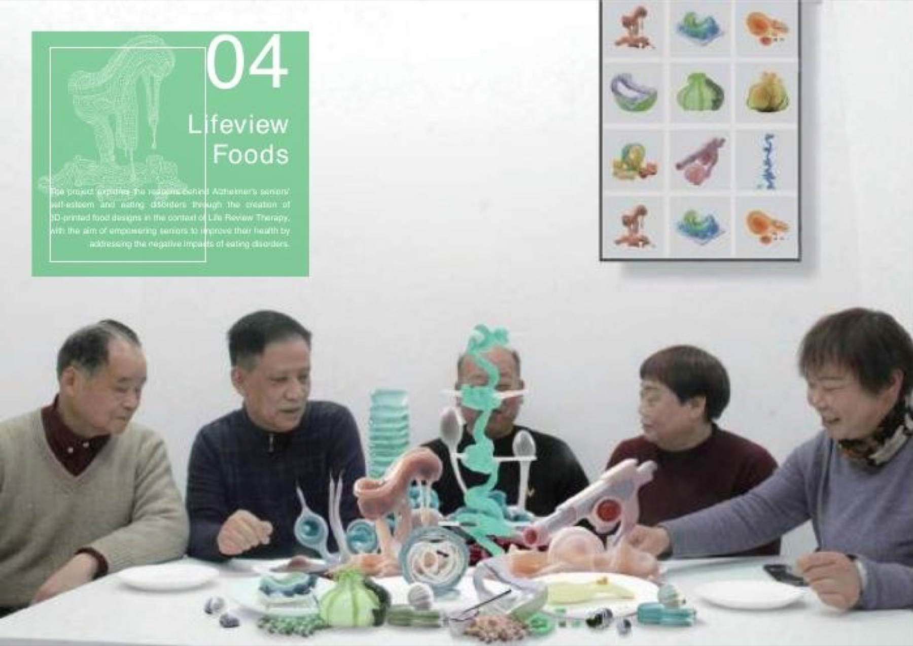
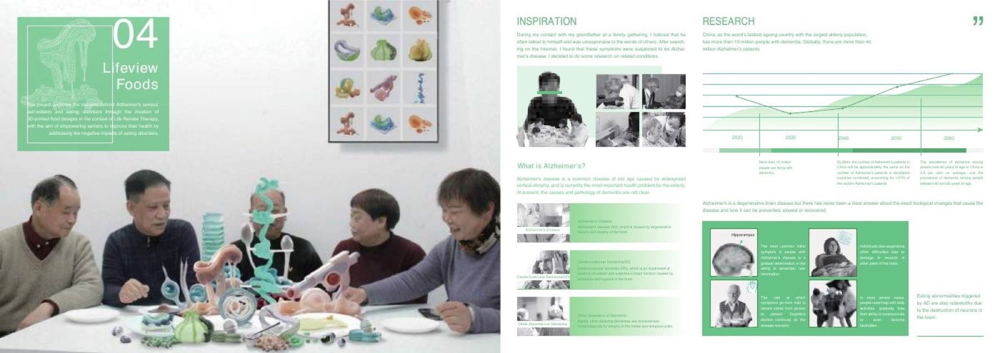
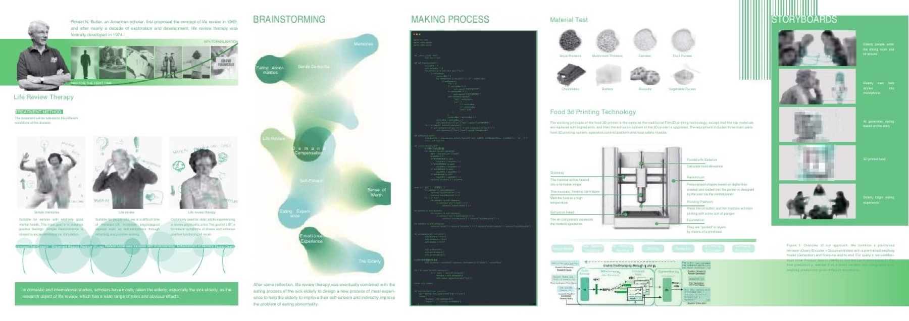

Lifeview Foods
A speculative dining service that uses a person’s memories as the starting point for a meal.
See the service and material studies
A service shaped by personal stories
The proposed service invites people to share memories and imagines translating those stories into new food forms. The project connects storytelling, identity, and care in later life.
What was made
Storyboards explore an AI-assisted service flow. Material tests and food-form experiments give the proposal a tangible reference.
Project documentation

